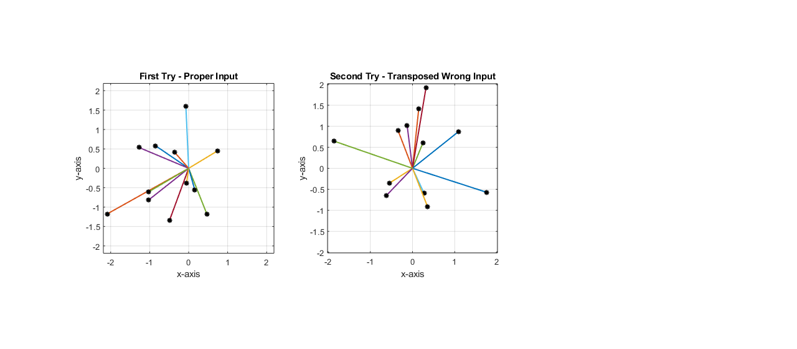
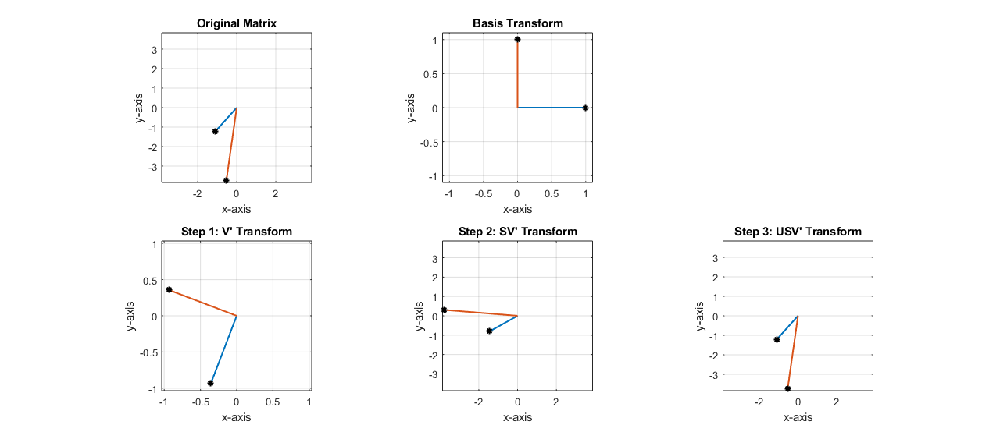
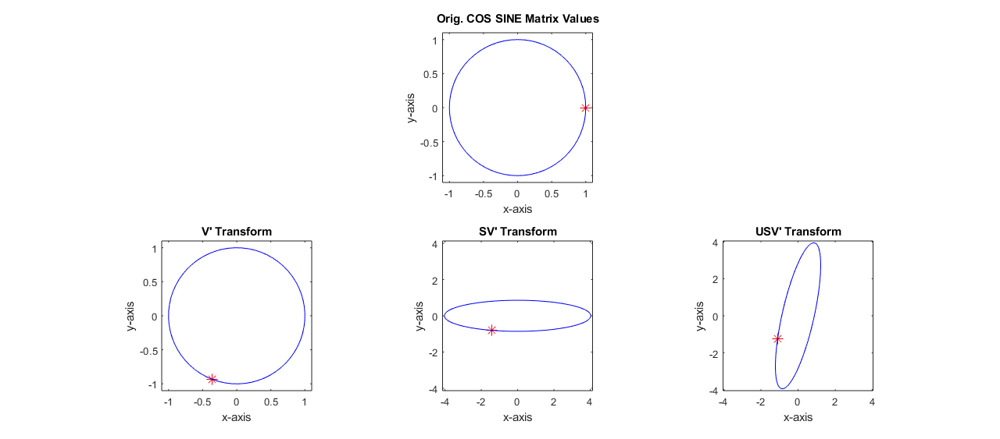

Contents
Math Tools I - HW #1 - Question 3: Geometry of Linear Transformations
(a) Create function PlotVec2
cushion = .1 ;
rightSizeMAT = randn(2,12) ;
subplot(1,3,1)
PlotVec2(rightSizeMAT)
max_axis = max(max(abs(rightSizeMAT))) ;
cushion = .1 ;
xlim([-max_axis-cushion max_axis+cushion]) ;
ylim([-max_axis-cushion max_axis+cushion]) ;
title('First Try - Proper Input')
incorrectSizeMAT = randn(12,2) ;
subplot(1,3,2)
PlotVec2(incorrectSizeMAT')
max_axis = max(max(abs(incorrectSizeMAT))) ;
cushion = .1 ;
xlim([-max_axis-cushion max_axis+cushion]) ;
ylim([-max_axis-cushion max_axis+cushion]) ;
title('Second Try - Transposed Wrong Input')

3.b Create the function venLenAngle
vec1 = rand(12,1) ;
vec2 = rand(1,12) ;
[len1, len2, Angle] = vecLenAngle(vec1,vec2);
disp('Vectors with different dimensions')
fprintf('vecLen1 = %f \n vecLen2 = %f \n Angle = %f', len1, len2,Angle)
vec1 = rand(12,1) ;
vec2 = rand(12,1) ;
[len1, len2, Angle] = vecLenAngle(vec1,vec2);
fprintf('\n\nVectors with the same dimensions')
fprintf('vecLen1 = %f \n vecLen2 = %f \n Angle = %f', len1, len2,Angle)
Vectors with different dimensions
vecLen1 = 2.218479
vecLen2 = 2.062009
Angle = 16.891681
Vectors with the same dimensionsvecLen1 = 1.593324
vecLen2 = 2.385814
Angle = 45.387597
3.c Use PlotVec2 to put basis vectors through the svd transform step-by-step
randMAT = randn(2) ;
subplot(2,3,1)
PlotVec2(randMAT);
title('Original Matrix');
max_axis = max(max(abs(randMAT))) ;
cushion = .1 ;
xlim([-max_axis-cushion max_axis+cushion]) ;
ylim([-max_axis-cushion max_axis+cushion]) ;
grid on
[U,S,V] = svd(randMAT) ;
e_1 = [1;0] ;
e_2 = [0;1] ;
subplot(2,3,2)
basis_values = vecLenAngle(e_1,e_2) ;
basis_combined = [e_1,e_2] ;
PlotVec2(basis_combined);
max_axis = max(max(abs(basis_combined))) ;
cushion = .1 ;
xlim([-max_axis-cushion max_axis+cushion]) ;
ylim([-max_axis-cushion max_axis+cushion]) ;
title('Basis Transform');
grid on
V_transform1 = V'*e_1 ;
V_transform2 = V'*e_2 ;
[len1, len2, Angle] = vecLenAngle(V_transform1,V_transform2);
fprintf('\n\nStep 1: V'' Transform (Rotate)\n')
fprintf('vecLen1 = %f \n vecLen2 = %f \n Angle = %f', len1, len2,Angle)
subplot(2,3,4)
V_combined = [V_transform1,V_transform2] ;
PlotVec2(V_combined);
max_axis = max(max(abs(V_combined))) ;
cushion = .1 ;
xlim([-max_axis-cushion max_axis+cushion]) ;
ylim([-max_axis-cushion max_axis+cushion]) ;
title('Step 1: V'' Transform');
grid on
SV_transform1 = S*V_transform1 ;
SV_transform2 = S*V_transform2 ;
[len1, len2, Angle] = vecLenAngle(SV_transform1,SV_transform2);
fprintf('\n\nStep 2: SV'' Transform (Stretch/Shrink)\n')
fprintf('vecLen1 = %f \n vecLen2 = %f \n Angle = %f', len1, len2,Angle)
subplot(2,3,5)
SV_combined = [SV_transform1,SV_transform2] ;
PlotVec2(SV_combined);
max_axis = max(max(abs(SV_combined))) ;
cushion = .1 ;
xlim([-max_axis-cushion max_axis+cushion]) ;
ylim([-max_axis-cushion max_axis+cushion]) ;
title('Step 2: SV'' Transform');
grid on
USV_transform1 = U*SV_transform1 ;
USV_transform2 = U*SV_transform2 ;
[len1, len2, Angle] = vecLenAngle(USV_transform1,USV_transform2);
fprintf('\n\nStep 3: USV'' Transform (Rotate)\n')
fprintf('vecLen1 = %f \n vecLen2 = %f \n Angle = %f', len1, len2,Angle)
subplot(2,3,6)
USV_combined = [USV_transform1,USV_transform2] ;
PlotVec2(USV_combined);
max_axis = max(max(abs(USV_combined))) ;
cushion = .1 ;
xlim([-max_axis-cushion max_axis+cushion]) ;
ylim([-max_axis-cushion max_axis+cushion]) ;
title('Step 3: USV'' Transform');
grid on
test = round(USV_combined,6) == round(randMAT,6);
answer = '\n\nSubjecting a matrix of basis vectors to the SVD\n of another vector returns the non-decomposed\n original matrix.\n';
if test == true
fprintf(answer)
else
fprintf('Your code is broken, fix the calculations')
end
Step 1: V' Transform (Rotate)
vecLen1 = 1.000000
vecLen2 = 1.000000
Angle = 90.000000
Step 2: SV' Transform (Stretch/Shrink)
vecLen1 = 1.645630
vecLen2 = 3.779531
Angle = 33.786370
Step 3: USV' Transform (Rotate)
vecLen1 = 1.645630
vecLen2 = 3.779531
Angle = 33.786370
Subjecting a matrix of basis vectors to the SVD
of another vector returns the non-decomposed
original matrix.

3.d Create a Circle Matrix, Plot it, Then Plot Again and Again after SVD Transforms from Previous Problem Matrix
n = 0:64;
thetas_ = (2*pi) * n ;
thetas = thetas_ / 64 ;
COS_SINE = [cos(thetas) ; sin(thetas)] ;
figure ;
subplot(2,3,2) ;
plot(COS_SINE(1,1), COS_SINE(2,1), 'Marker', '*', 'MarkerEdgeColor', 'r', 'MarkerSize', 10)
hold on
plot(COS_SINE(1,:), COS_SINE(2,:), 'b-') ;
axis equal
title('Orig. COS_ SINE Matrix Values')
max_axis = max(max(abs(COS_SINE))) ;
cushion = .1 ;
xlim([-max_axis-cushion max_axis+cushion]) ;
ylim([-max_axis-cushion max_axis+cushion]) ;
xlabel('x-axis')
ylabel('y-axis')
V_transform_circle = V'*COS_SINE ;
subplot(2,3,4) ;
plot(V_transform_circle(1,1), V_transform_circle(2,1), 'Marker', '*', 'MarkerEdgeColor', 'r', 'MarkerSize', 10)
hold on
plot(V_transform_circle(1,:), V_transform_circle(2,:), 'b-') ;
axis equal
title('V'' Transform')
max_axis = max(max(abs(V_transform_circle))) ;
cushion = .1 ;
xlim([-max_axis-cushion max_axis+cushion]) ;
ylim([-max_axis-cushion max_axis+cushion]) ;
xlabel('x-axis')
ylabel('y-axis')
SV_transform_circle = S*(V'*COS_SINE) ;
subplot(2,3,5) ;
plot(SV_transform_circle(1,1), SV_transform_circle(2,1), 'Marker', '*', 'MarkerEdgeColor', 'r', 'MarkerSize', 10)
hold on
plot(SV_transform_circle(1,:), SV_transform_circle(2,:), 'b-') ;
axis equal
title('SV'' Transform')
xlabel('x-axis')
ylabel('y-axis')
max_axis = max(max(abs(SV_transform_circle))) ;
cushion = .1 ;
xlim([-max_axis-cushion max_axis+cushion]) ;
ylim([-max_axis-cushion max_axis+cushion]) ;
USV_transform_circle = U*(S*(V'*COS_SINE)) ;
subplot(2,3,6) ;
plot(USV_transform_circle(1,1), USV_transform_circle(2,1), 'Marker', '*', 'MarkerEdgeColor', 'r', 'MarkerSize', 10)
hold on
plot(USV_transform_circle(1,:), USV_transform_circle(2,:), 'b-') ;
axis equal
title('USV'' Transform')
xlabel('x-axis')
ylabel('y-axis')
max_axis = max(max(abs(USV_transform_circle))) ;
cushion = .1 ;
xlim([-max_axis-cushion max_axis+cushion]) ;
ylim([-max_axis-cushion max_axis+cushion]) ;
answer = 'First Step = Rotate \n\nSecond Step = Stretch \n\nThird Step = Rotate Again';
sprintf(answer)
ans =
'First Step = Rotate
Second Step = Stretch
Third Step = Rotate Again'
